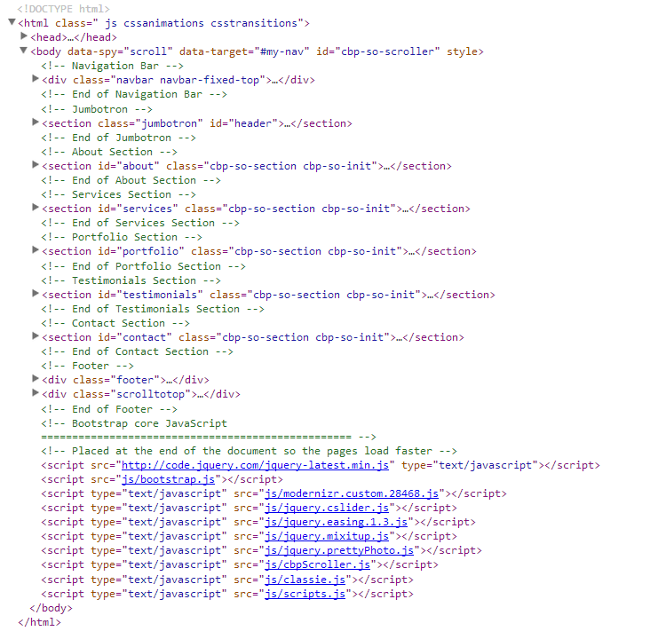
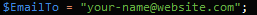

“Planus - HTML Bootstrap 3 Template” Documentation by “Silviu Stefu” v1.0
“Planus - HTML Bootstrap 3 Template”
Thank you for purchasing my theme. If you have any questions that are beyond the scope of this help file, please feel free to email via my user page contact form product page. Thanks so much!
Table of Contents
- HTML Structure
- CSS Files and Structure
- JavaScript
- PSD Files
- Contact Form Configuration
- Design assets
Planus HTML is a responsive template built on Twitter Bootstrap 3 framework. It's a one-page website ment to present you as a designer to the world. Moreover, this theme can be adapted to any kind of creative company. This theme was built using the latest features from Bootstrap 3 so it's responsive (mobile first), flat and very nice animated.
Features
- Responsive design
- Built on Boostrap 3
- Valid HTML5 + CSS3
- Clean flat design
- Clean coded
- PSDs included in package
- Cross Browser compatible
- Google Fonts
- Fixed/animated menu
- CSS3 animations and transitions
- 1180 Grid Based
A) HTML Structure - top
The html file
is structured using the HTML5 syntax like bellow:

As you can see, every major section is commented and you can do nothing wrong if you make the edits accordingly
The one-page html file contains the following sections:
- Navigation - wich is fixed to top
- Featured area called Jumbotron
- About Us
- Services
- Portfolio
- Testimonials
- Contact Us
- Footer
B) CSS Files and Structure - top
There are three css files necessary for customization.
- "bootstrap.css" reset file and template framework.
- "prettyPhoto.css" contains styles for prettyPhoto plugin.
- "style.css" is the main css file including the elements that were overriden.
- "style.less" is the LESS file from wich the main CSS file was generated. So, if you have a LESS compiler, you can use the LESS file to make edits.
The style.css file is separated into sections:
- /* ---------- General Styles and Components ---------- */
- /* ---------- Navigation Bar ---------- */
- /* ---------- Jumbotron Section ---------- */
- /* ---------- About Me Section ---------- */
- /* ---------- Services Section ---------- */
- /* ---------- Portfolio Section ---------- */
- /* ---------- Testimonials Section ---------- */
- /* ---------- Contact Section ---------- */
- /* ---------- Footer ---------- */
- /* ---------- Media Queries ---------- */
NOTE: If you would like to edit a specific section of the site, simply find the appropriate label in the CSS file, and then scroll down until you find the appropriate style that needs to be edited.
C) JavaScript - top
This theme imports more Javascript files located in the "js" folder.
- jQuery - Latest jQuery library Located on Google servers
- bootstrap.js - java scripts for Bootstrap framework
- jcbpScroller.js - for section fading on scroll
- classie.js
- html5shiv.js - for IE compatibility
- jquery.cslider.js - testimonials slider
- jquery.easing.1.3.js - for easing animations
- jquery.mixitup.js - for section fading on scroll
- jquery.prettyPhoto.js
- modernizr.custom.28468.js
- respond.min.js - for section fading on scroll
- scripts.js - loaded on the bottom of each pages and contains every little script used for:
- calling other plugin actions
- making custom animation and functions
D) PSD Files - top
The PSD folder contains one psd file for the main page. Some graphics were changed durring html converting process but the PSD file contains all elements you may need.
open the "contact.php", find this line and change it with your email adress:

F) Design assets - top
I've used the following images, icons or other files as listed.
You need to replace all image placeholders with your own. To do that, you need to head to "assets" folder on each template version and replace each image with another images having the same dimmensions.
The fonts in the body and headings are Open Sans and Ubuntu.
Some further help
1. PrettyPhoto usage
To use the prettyPhoto plugin just referr to the documentation available here
3. Bootstrap
For any other help regarding Bootstrap 3 framework, please referr to their documentation available here
Once again, thank you so much for purchasing this theme. As I said at the beginning, I'd be glad to help you if you have any question related to this theme. No guarantees, but I'll do my best to assist.
Silviu Stefu
Go To Table of Contents